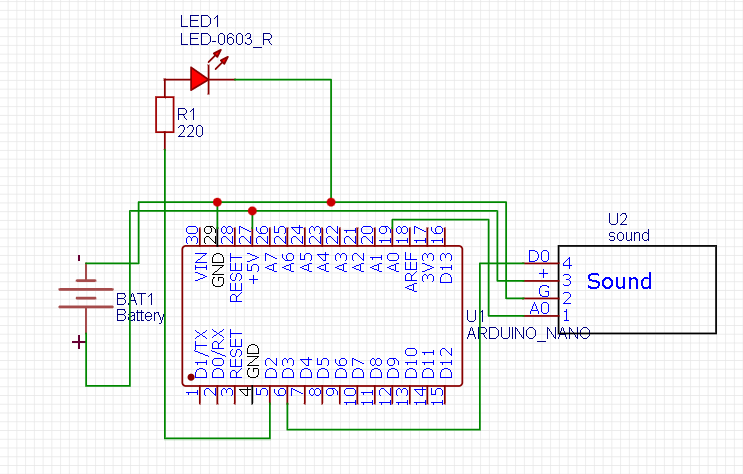

Умный свет
Для создания умного света понадобится:
- Arduino nano
- Датчик звука
- батарейка питания
- Светодиод
Принцип работы
Принцип работы заключается в том что при хлопке или щелчку пальцев достаточной громкости будет загораться или потузать светодиод. Так же можно вместо светодиода использовать лампочку 220 вольт, но для этого нужно будет подключать реле.
Схема подключения:
Прогромирование
Для прогромирования нам не понадобятся стороннии библиотеки
Код с пояснениями:
boolean statuslamp; // состояние лампы: true - включено, false - выключено
void setup() {
pinMode(2,OUTPUT); // пин 2 со светодиодом будет выходом (англ. «output»)
pinMode(A0,INPUT); // к аналоговому входу A0 подключим датчик (англ. «intput»)
statuslamp=false; // начальное состояние - лампа выключена
Serial.begin(9600); // подключаем монитор порта
}
void loop() {
Serial.println (analogRead(A0)); // выводим значение датчика на монитор
if(analogRead(A0)>60) {
statuslamp=!statuslamp; // меняем статус лампы при регистрации хлопка
digitalWrite(2,statuslamp); // переключаем светодиод на выходе 12
delay(20); // задержка, "дребезга" хлопков
}
}